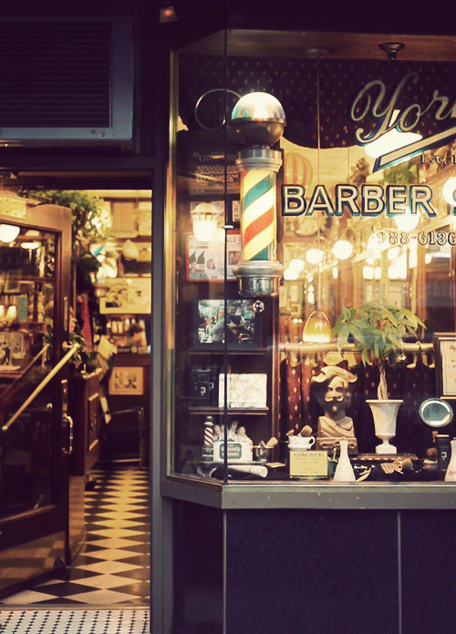
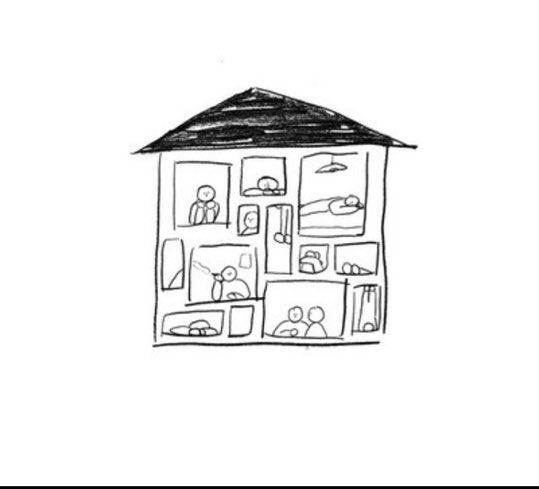
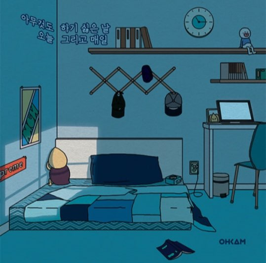

-미녀와 야수에서 컵과 주전자가 움직이는 것, 수업시간에 선생님 몰래 춤추기(플레시게임이름)
-시네마 그래프처럼


<방향>

ex
너의 이름은 [스파클] ⇒ 빨간 머리끈, 이토모리 마을의 스와 호수, 유성
달빛천사 ⇒ 깃털, 노래, 오르골, 달
짱구는 못말려 ⇒ 짱구 옷색, 잠옷 모양, 초코비
학교괴담 [Grow up] ⇒ 유령
스펀지밥 ⇒ 스펀지, 노랑색, 물,거품, 파인애플 집
세일러문 ⇒ 하트, 달, 노랑색
이웃집 토토로 ⇒ 도토리, 나뭇잎우산, 고양이버스, 먼지
센과 치히로의 행방불명 [always with me] ⇒ 돼지, 가오나시, 먼지, 일본 분위기
하울의 움직이는 성 [인생의 회전목마] ⇒ 성
시간을 달리는 소녀 ⇒ 시계
핀과제이크의 어드벤처 타임
...
1
물체의 움직임


2
분위기만 참고
분위기만 참고2-오르골 돌아가는 느낌
분위기만 참고3
3
문열리는 느낌
별개
그라데이션 배경 코드